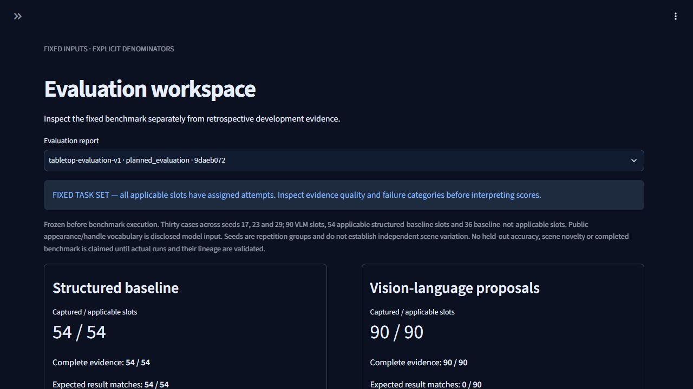
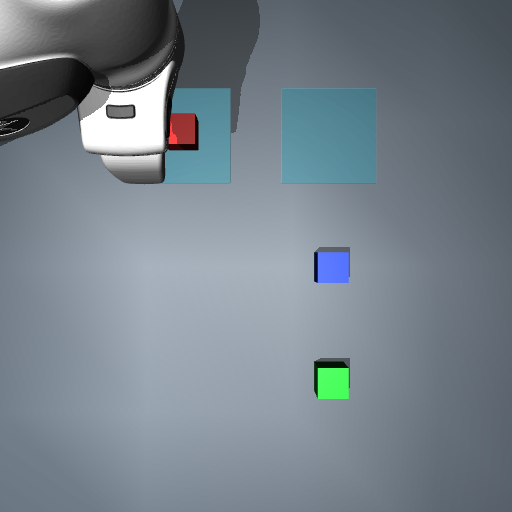

PROJECT 02 · ROBOTICS DATA ENGINEERING
Robot Episode Data Platform
From a robot experiment to a dataset you can inspect, rebuild and trust.
I built a local data platform that preserves camera observations, events, actions, model outputs and outcomes, then links them to versioned analytical datasets and evaluation reports.
01 / THE DATA PROBLEM
A score needs a traceable experiment
A successful robot task can have incomplete data. A failed task can have complete, useful evidence. I designed the platform to keep task outcome, completeness, quality and model validity separate, so analysts can understand both successful and failed experiments.
- Preserve before projection: original bytes and receipts remain available when database projection needs recovery.
- Replay without execution: repeated delivery rebuilds data projections without another robot task or model call.
- Version analytical inputs: published datasets bind source hashes, explicit assignments, code identity and quality checks.
02 / IMPLEMENTED ARCHITECTURE
An evidence path from capture to evaluation
- CaptureMuJoCo / Panda images, events and measured outcomes
- Preserve & validateContent-addressed raw bytes, receipts and reference checks
- ProjectTransactional PostgreSQL metadata with duplicate identities controlled
- PublishPrefect → frozen inputs → Parquet / DuckDB
- Evaluate & inspectDataset-linked reports → FastAPI → Streamlit
An offline, replaceable vision-language adapter produces separate proposal attempts. Its inputs exclude evaluator targets and reference poses. Proposals never operate the robot.
03 / MEASURED RESULTS · 9 NOVEMBER 2026
Complete evidence, including a model that failed
The fixed set contains 30 instructions across three repetition seeds. Only 54 slots apply to the structured controller; 36 language-only slots are not applicable. The model has 90 applicable slots. These are separate configurations, not a paired comparison of physical success.
The pinned SmolVLM-256M model was unsuitable for task selection under the tested settings. I retained all invalid responses and classified them as plan-schema failures. Model physical success is not applicable because no proposal was executed.
On an i5-6500T CPU, model worker-wall latency was 17.49 seconds at p50 and 24.88 seconds at p95. Ninety sequential attempts took about 28.1 minutes. Runtime used two CPUs and a 6 GiB memory limit.
Download measured results and provenance
04 / ENGINEERING VALIDATION
Rebuild the data without repeating the experiment
- 110 passing local checks: 103 core, analytics and evaluation checks plus seven dashboard acceptance checks.
- Duplicate-safe raw replay: 71 robot episodes and 93 model attempts replayed without changing database fact counts. These audit totals include earlier development attempts.
- Historical reproducibility: both historical datasets and the benchmark dataset rebuilt with matching logical tables and metrics.
- Fresh application-volume test: a separate Docker workspace completed capture, inference, ingestion, a real Prefect flow, rebuild, evaluation, dashboard health and replay.
The fresh-volume check reused built images and prepared read-only model weights. Remote CI, other host platforms and exhaustive host power-loss behavior remain unverified.
05 / SEE THE ROBOTICS CONTEXT
One captured episode, before and after
These actual development images illustrate the observation-to-outcome trace. They come from a separate development episode, not additional benchmark trials. The baseline controller uses known simulator handles.


Download the source bundle, follow its README to generate a development dataset, then open the local dashboard. The included three-minute walkthrough covers Overview, Episodes, Evaluations, Proposals and Data quality. The full optional model benchmark takes longer than the development quick start.
06 / SCOPE AND JUDGMENT
What this establishes
A reproducible local experiment-data workflow, tested recovery boundaries and honest model evaluation. The bounded scene, repetition seeds and public appearance-to-handle legend do not establish general visual grounding, arbitrary-scene manipulation, production scale or physical-robot deployment.
This is a separate project from my fleet operations center. Project 1 focuses on operational incidents and investigation; this project focuses on data capture, lineage, analytical publication and evaluation.
Explore both projects